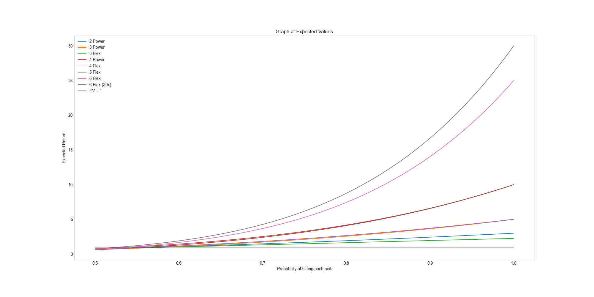
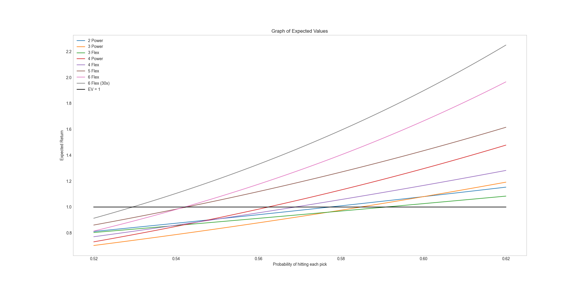

This insights page focuses on employing quantitative methodologies to improve success rates in Daily Fantasy Sports (DFS) betting, specifically on the Prize Picks platform. Notably, while the Prize Picks platform serves as the example here, the strategies discussed could be adapted to fit various other DFS platforms.
Prize Picks stands out for its feature that allows bets on individual players' statistical performances as opposed to the final score or match outcome. These bets are essentially a collection of individual player predictions compiled into a single bet. The goal is to correctly predict whether a player's performance will exceed or fall short of a predetermined projection.
In the betting landscape, odds are naturally skewed in favor of the platform or "house." However, incorporating mathematical concepts and a data-driven approach can help balance the scales towards the bettor. Assuming our predictive model demonstrates high accuracy, the Expected Value (EV) of the bets can become positive over the long run.
EV Calculations
Prize Picks offers an array of payout structures that correspond with different types of parlay bets. These payout structures work on a multiplier basis; thus, the potential winnings from a bet are calculated by multiplying the bet size by the given payout. Take for instance, a 3x payout on a bet size of $10, which would result in $30. The full payout chart for Prize Picks is shown in the table below.
N Leg Parlay Type
Payout 1 (N Correct)
Payout 2 (N - 1 Correct)
Payout 3 (N - 2 Correct)
2 Power
3x
3 Power
5x
3 Flex
2.25x
1.25x
4 Power
10x
4 Flex
5x
1.5x
5 Flex
10x
2x
0.4x
6 Flex
25x
2x
0.4x
6 Flex (30x)
30x
2x
0.4x
With the payout multipliers given, we are able to compute and visualize the Expected Value (EV) for each type of parlay bet. In these computations, we will standardize the bet size to one unit for simplicity. In this context, the variable 'p' in our calculations represents the probability of each individual component (or "leg") of the bet being correct. For example, if p equals 75%, this implies that each leg of the bet has a 75% chance of being accurate.
Here's where it becomes particularly interesting: the EV itself is a function of 'p'. This means that the EV changes as 'p' (the probability of a correct prediction) changes. By adjusting this probability 'p', we can chart the EV at various degrees of confidence in our predictions. This results in visualizations that clearly depict how the EV fluctuates with the accuracy of predictions across different types of parlays. So, not only does this offer a precise view of the bet's potential worth, but it also aids bettors in making informed decisions based on their confidence in the predictions.
Computation
Let's consider the computational process involved with a 2-leg parlay bet that offers a 3x payout for correctly predicting both outcomes. For such a bet to break even, we need to win at least once for every three bets placed. For instance, if we place three bets of $10 each, we'd spend $30 in total. One successful bet at a 3x payout would also yield $30, thus balancing out the cost
Now, let's denote the probability of each individual leg of the bet being correctly predicted as 'p'. Given that there are only two legs in this case, the equation to break even would be p*p = 1/3. Thus, the break-even percentage would be the square root of 1/3, or approximately 57.7%
Using this approach, we can expand the analysis to compute the Expected Value (EV) as a function of 'p' for various types of bets and their respective payouts. Take, for example, the payout EV for a 3-leg power play bet, which gives a 5x payout if all three predictions are correct. This can be graphically represented using the equation y = 5 * p^3. In other words, the EV is calculated by multiplying the payout (5) by the probability of all three predictions being accurate (p^3).
Graphs
The Expected Value (EV) plotted on the graph represents the total expected payout — not merely the profit — and it is a function of 'p', which signifies the probability of each individual prediction being accurate. Thus, our point of breakeven is denoted by an EV of 1 (EV = 1 on the y-axis of the graph).

The graph above demonstrates that as our confidence in predictions (p) increases, so does the EV for all parlay types. Higher-risk parlays with larger payouts become more appealing as confidence goes up, due to their higher EVs. This corresponds to intuitive logic: given complete certainty about our predictions, a 6-legged bet with a 25x payout would naturally be more attractive than a 2-legged bet with a 3x payout.

Looking more closely, we can pinpoint the breakeven points for each parlay type, i.e., where the EV equals 1. For instance, we would break even over time on 4-legged power play parlays with a 56% prediction accuracy. Any accuracy level above this would lead to long-term profitability.
Additionally, the analysis can direct us towards the most profitable parlay given a specific estimated prediction accuracy. For instance, if our predictions are 54% accurate, the only viable and long-term profitable choice would be the promotional 6-legged flex parlay with a 30x payout.
For the source code for these graphs, check out my frontend Github Repository Jupyter Notebook file.
Breakeven Percentages
The table below details the accuracy needed for profitability on each parlay type:
Parlay Type
Win Percentage
2 Power
57.7%
3 Power
58.48%
3 Flex
59.09%
4 Power
56.23%
4 Flex
56.89%
5 Flex
54.25%
6 Flex
54.21%
6 Flex (30x)
52.94%
The primary objective is to establish a data-oriented decision-making framework for DFS betting. While it's crucial to remember that sports betting is innately unpredictable, leveraging a systematic, data-driven strategy can help to mitigate risk and maximize profit over the long run.